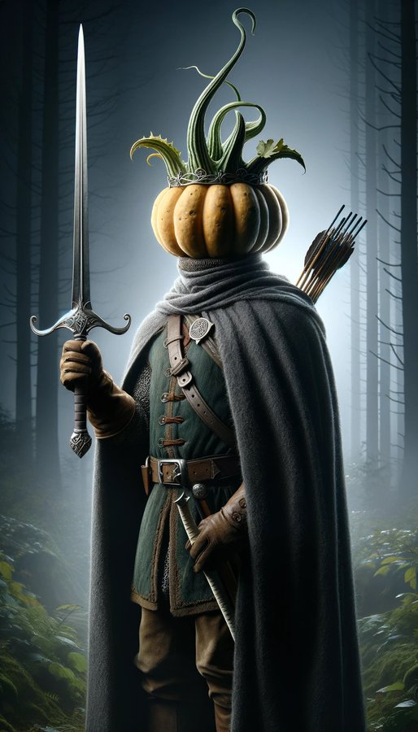
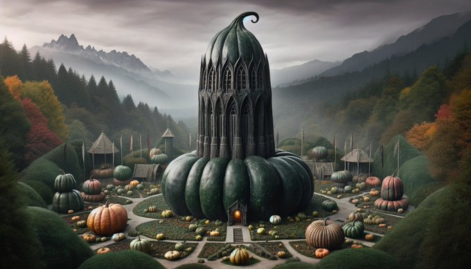
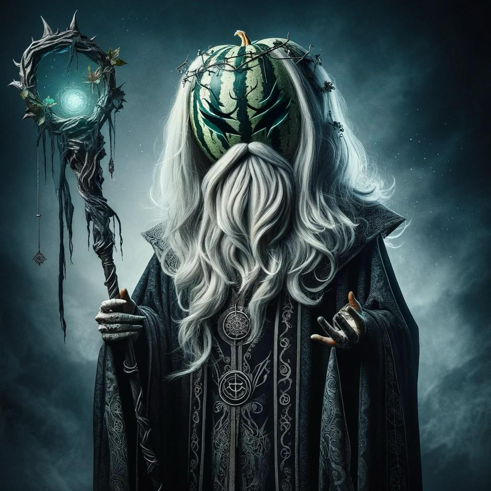

Special Shout out to Bruce Potter and the Shmoocon Crew!
Introducing Aragourd
And of course, Gandalf the Gourd

It wouldn't be complete with Isengourd!
Legourdlas!
Gourdo Baggins!

Gourdli!
Sarumelon!
Balrog of Gourdoth

Tower of Gourdon

Credit for all the creative folks who generated these images!
Special thanks to Tib3rius (@0xTib3rius on Twitter) for sharing the Aragourd, Isengourd, and Gandalf the Gourd images!
Special thanks to Deep_Dish (@1337haks on Twitter) for sharing the Legourdlas, Gourdli, Sarumelon, Balrog of Gourdoth, and the Tower of Gourdor images!
Special thanks to Gn0miez (@Gn0miez on Twitter) for sharing the Gourdo Baggins image!